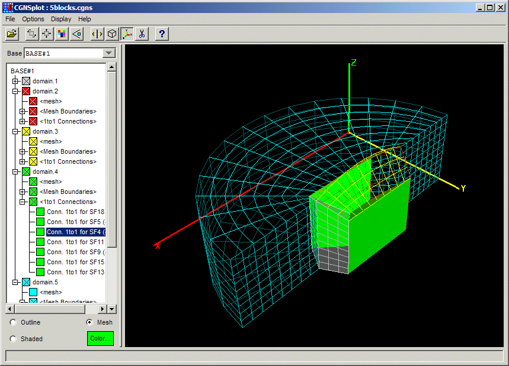

CGNSplot Documentation
The CGNSplot program displays the mesh, element sets, connectivities and
boundary conditions defined in a CGNS file. You may click on the image
below to jump to a topic, or select from the following links.

[previous] [index] [next]